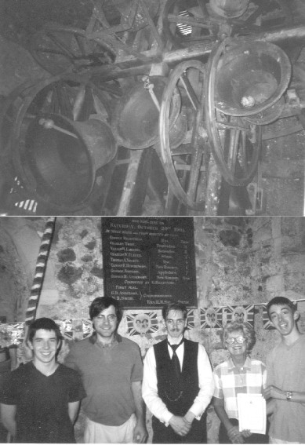

St Nicholas, New Romney
Details of the Bells
| Treble |
4-1-7 |
E |
1809 |
Thos. Mears & Son |
| 2 |
4-3-4 |
D# |
1784 |
Chapman & Mears |
| 3 |
5-3-21 |
C# |
1805 |
Thos. Mears & Son |
| 4 |
6-0-1 |
B |
1909 |
Mears & Stainbank |
| 5 |
8-0-22 |
A |
1776 |
Pack & Chapman |
| 6 |
8-1-26 |
G# |
1776 |
Pack & Chapman |
| 7 |
11-1-3 |
F# |
1909 |
Mears & Stainbank |
| Tenor |
16-2-4 |
E |
1909 |
Mears & Stainbank |
Ringing Times
| Practice: |
Main Guild practice: Monday 7:30 - 9pm |
| Sunday: |
Morning: 9:50 - 10:25am; |
| Sunday |
Evening: Service only on 1st Sun; General Ringing until 6:30pm by local band |
Members
| Captain: |
D. Jackson |
Hon. Secretary:
Ringing Master:
Treasurer:
Deputy Captain:
Steeplekeeper:
|
Mrs L. Leyshon
C.J. Cooper FGMS
Mrs V. Hutchens
V. Hutchens
A. Smart
Mrs B. Hutchens
Miss A. Hutchens
Mrs J. Lester
Mrs A. Masey
A. Masey
Mrs Z. Pyott
Mrs A. Smart
|
Ringing HQ of the Guild and of the benefice including Burmarsh, Newchurch and Ivychurch.
Vicars of New Romney
1936
Walter Frederick Scott
1938
Arthur Henry Dolphin
1954
John Frederick Stuart Martin
1966
Arthur Brian Canning
1971
Lionel Peter Ford
1994
John Henry Coleman (P in C)
2004
Martin Nicholas Dale (P in C)
2008
James Lewis Field (P in C)
History
1050 Tower Built
1549 Archbishop
Cranmer orders that St Martin's New Romney be demolished, as New Romney
doesn't need two parish churches. The old ring of 5 are
transferred to St Nicholas, and hung in the tower.
1600 Another bell added
1748 Old ring of six scrapped and new ring of 8 cast by Robert Catlin of Holborn - Tenor inscribed:
R-:-C 1748 James Brissenden O John Russell O Churchwardens. May 18th: Old 6 bells taken down. Jun 13th: Old six bells carri'd away in three wagons. Nov 14th: The new 8 bells came home to New Romney. Nov 22nd:
First ringing on the bells by the following men (assumed to be locals)
1) Jon Atwell 2) Jas Acton 3) Mr Humph' Whitwick 4)
Mr Wm. Freebody 5) Mr Ed. Carpenter 6) Thos. Halkes
7) Mr John Russell 8) Mr Wm. Slodden
Nov 23rd: First peal on the bells (rung by the Dover men) Grandsire Triples.
Nov 25th: Another peal of Grandsire Triples, this time by the Wye men.
1749 Jan 2nd: Peal of Bob Major by the Lenham Youths (later the Leeds Youths) 5040 Bob Major in 3h 20min.
1762 May 31st: (Monday) 5184 Oxford T.B. Major in 3h 25 min, rung by the Leeds Youths.
1776 4th, 5th, 6th & 7th recast
1784 2nd recast
1805 3rd, 4th & 7th recast
1809 Treble recast
1870's Bell
from All Saints Hope removed from the ruins of that edifice and placed on the floor at the back of New Romney church.
 New Romney Church c.1875
New Romney Church c.1875
1900 Romney Marsh & District Guild founded – New Romney one of the founding towers.
1901 The Hythe bellringers held
an outing - one of the towers visited was New Romney, and the following
picture of that excursion was taken outside New Romney Church:

--------------------

Believed to be Rev. R.M. South

1903 First R.M. & D.G. peal rung here
on October 28th – GrandsireTriples. This was also the first
recorded peal on the bells since 1821.
1904
New set of Belfry Rules drawn up and printed (pictured above) - these were rediscovered in
July 2005, framed and placed back on the tower wall.
1907
Highwood Smith Humphery returns to New Romney from Woolwich, and
being a competent changeringer, is elected as Captain - a position he
is to hold until his death in 1969 aged 88! Latterly he resides
at 29 Churchlands; having in his earlier days kept a Grocers store in
New Romney High Street, and a painters & decorators.
1909 Tenor (the
last surviving Catlin bell) 7th & 4th (both themselves 1805 recasts
by T. Mears I) recast and the whole ring rehung by Mears &
Stainbank. The old service Bell from Hope (All Saints) is hung for swing chiming as a service bell in New Romney tower. The first peal since rehanging is accomplished on April 17th including several of the local band. The board is pictured below left.
The
recast 4, 7 & Tenor outside New Romney Church in 1909. This
picture (22" x 24") was discovered lying in the church and reglazed and
hung back in its original place on the ringing room wall in February
2006

The first peal since rehanging is accomplished on
April 17th including several of the local band.
1912
Jan 16th First peal on the bells by an entirely local band (band pictured below). This band
included Spencer Southerden – his grandson taught the present
Guild secretary 'woodwork' at Southland’s School in the
1990’s.
This picture of the local peal band hangs below the above pictured board.
Pictures of the interior at the start of the 20th Century

The Certificate of service rendered to the Empire by New Romney ringers in the Great War

Picture of the Choir & Ministers c.1920's
1960's A peal on the bells one Thursday night with the
late T. Cullingworth ringing the Tenor. Mr Cullingworth told us
how Highwood Smith-Humphery (Tower Captain)
sat through the
whole peal in a large raincoat! - this era was one of the few when New Romney bells were readily avilable for peals.
1966
1969 Last peal on the bells
before rehanging and tuning - an 'In Memoriam' peal for H.S. (Tit)
Humphery who had died recently aged 88.
KCACR
Subscription receipts for Highwood Smith Humphery; these were
discovered screwed up amongst the dust in a belfry alcove by C.J.
Cooper; 1995.
1975 Bells successfully tuned and rehung by Whitechapel foundry. Pictures of the local band at this time are below:
1987 The October hurricane caused serious damage to the tower.
1994 Work completed on the stonework and other strengthening of the
tower. The local fire brigade replaced the restored clock face on
the tower. The current secretary of the
Guild attended the first practice on the bells since 1988 – at
which practice the rope boss promptly fell off the 7th!
1995 The present Guild secretary along with E. Williams spent
considerable time clearing dead birds from the tower, and arranged a
number of Quarter Peals on the bells including Bristol S. Major, and
one of Superlative S. Major which was rung following Southlands School Prizegiving at the end of the O-level exams.
1998 First peal on the bells since 1969!
2002
The R.M. & D.G. rang a beautifully struck Quarter Peal of
Grandsire Doubles on the back 6, with Mrs E.Nicholson (then Tower Captain)
ringing the Treble. This ringing was to celebrate the golden
Jubilee of
H.M. Queen
Elizabeth II. A framed record of this and the ringing for the
1977 Jubilee was presented to the tower by the Secretary, and Mrs
Nicholson
paid the cost of
the frame.

The band who rang the Quarter Peal for the Golden Jubilee of HM Queen Elizabeth II.
2005
The Guild began regular practices, training a local band,
and ringing the bells one Sunday per month, morning and evening.
The framed record of the Jubilee ringing was restored to its
original condition only to be removed from the belfry entirely. Thanks to Rev. Dale, these records (below) were recovered.
2006 The
band consisted of seven ringers residing in the parish, as
well as the Captain and an assistant. A meeting of the Church
Vestry in July appointed a tower captain (Mr C.J. Cooper), and the ringers
held a meeting to re-establish the St Nicholas', New Romney Society of
Change Ringers, at the beginning of August. The Saturday prior to
that meeting a peal was rung in the name of the old Society (1904
rules) and this peal was sponsored raising nearly £1000 toward
repairing the dilapidated louvres at ringing room level.


The helpers for the tower open day 2006, including three of the band who rang in the sponsored peal that morning
St Nicholas', New Romney, Society of Change Ringers and the former Minister (with board recording sponsored peal); August 2006
2007 September: New Tower
Captain appointed, (Mr D. Jackson) being an inhabitant of the Parish;
work on replacing the two West end louvres was
imminent. Mr
Hutchens (H.S. Humphery's grandson) planned fitting of sound insulation
among the bells. Mr Hutchens tells us they'd been planning to
install
some insulation in the 1950's - but never got around to it!

 Ringing in the New Year 31/12/2007 - 1/1/2008
Ringing in the New Year 31/12/2007 - 1/1/2008
2008 February: Messrs
Hutchens & Smart fitted a new tower carpet, and new lighting as
well as a new wooden rope spider up the central pole in the ringing
room. Mr Hutchens also presented a new solid oak table (with
sections for the method boards to fit in) which he had made in memory
of his grandfather H.S. Humphery Esq., and fitted it round the central
pole.
April - December: The Church was closed, undergoing major
restoration, (pictured)

and was reopened on Advent Sunday, 30th November. A
Quarter Peal of Grandsire Triples was rung prior to the service,
including Mr V. Hutchens ringing Tenor, and thus scoring his first
Quarter Peal at the tower in which he was taught over 50 years ago by his grandfather, H.S.
Humphery. Work to replace all the
louvres in the tower and fully restore it began in December 2008 and continued until March 2009.
Ringing in the New Year 31/12/2008 - 1/1/2009
2009 January: The bells went
out of action due to internal scaffolding being constructed around the
bellframe whilst the contractors replaced all the louvres. The
church decided to replace the four louvres in the ringing room with
leaded lights, so that all six openings in the tower would be glazed
thus giving views of the town from all sides except obviously the East.
The soundproofing mats were carried up the tower by Mr Hutchens
and his now seasoned taskforce of ringers and laid in the bell pits.
March: Bells came back into action at
end of February following replacement of all louvres. All louvred
openings in ringing room have also been replaced with leaded-light
windows, and grilles placed over them to stop them being vandalised.
Messrs Smart & Hutchens assembled new free-standing cupboard
in ringing room for extra storage. Tower rewired. Partial
laying of soundproofing which has quietened bells somewhat but without
losing the tone. Further work to balance the sound to be carried
out. At the Tower AGM in mid-March, Miss R.S. Dearing, Landlady
of the Prince of Wales was elected Secretary with Mr A. Smart taking
over as Steeplekeeper; other Officers continuing in their posts.
There are now 12 local ringers (ie resident in the parish) plus a
non-resident Ringing Master who instructs at practices, and Miss
Dearing who currently does not ring.
April: 17th - Peal
successfully rung to mark the centenary of the first peal on the bells
following rehanging. The peal was Grandsire DOUBLES rather than
Triples due to meeting short. The Tenor was rung by the Tower
Captain; the first local band member to ring a peal at New Romney for
over 50 years.
August: A new method
devised by the 2009 Master of the Guild was rung to a peal on the
bells at New Romney. The method was named "New Romney Delight"
and a peal board made; to be dedicated at the Guild AGM in January
2010. Also, several youngsters began learning to ring as
probationers at the tower.

2012 - January 16th: A band of Guild
members attempted a peal of Parkers 12-Part peal of Grandsire Triples
upon the Centenary of the first and only local-band peal on the bells.
Unfortunately the 2012 attempt was lost due to a shift in course
after just over 2500 changes. A recording of the first 15 minutes of
this peal attempt and another of a course of New Romney Delight Major
can be viewed on YouTube.
---------------------------o0o-------------------------------
Pictures of the Church exterior in the early part of the 20th Century